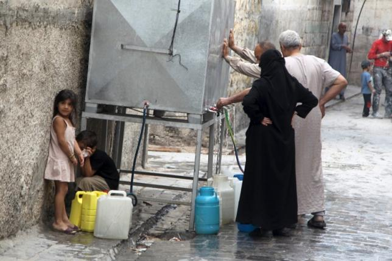
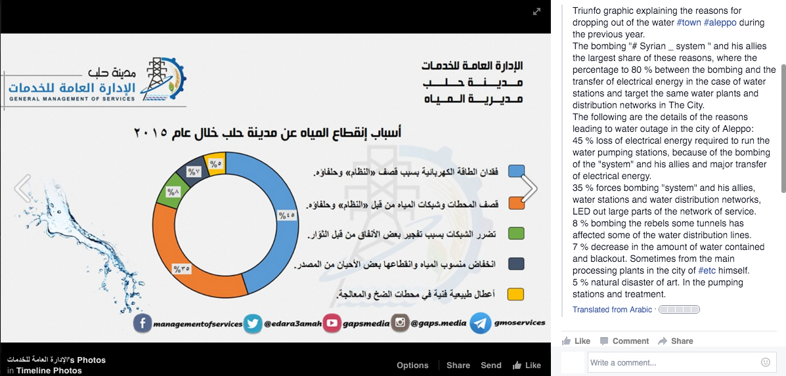

Overview
The Syrian civil war has leveled cities, uprooted thousands of families, and forced a refugee crisis of a scale not witnessed since the Second World War. Of the many inhuman brutalities inflicted upon the residents of Syria, barrel bombs dropped by regime forces, torture at the hands of ISIS militants, the blockading of food and medical supplies, and the intentional targeting of non-combatants, the weaponization of the water infrastructure represents a uniquely viscous attack against civilians. Residents throughout the divided city of Aleppo describe finding safe water as a constant struggle. In some areas, the water supply has been cut for a long as three months at time
1
, causing families to resort to makeshift wells, usually unfit for consumption, or paying outrageous prices for outsourced supplies."Can you imagine life without electricity? Well, we've tried that. We managed to adapt to all kinds of shortages and risks. But water is a different issue - how can you possibly live without it?" said 28-year-old Darwish to Reuters.
2
The water supply has been particularly vulnerable due to division of Syria into separate territories and the shifting of territorial control from government to ISIS to rebel forces. This allows all sides to leverage their position along the water supply chain as a strategic ‘weapon of war,’ damaging a remote point in the infrastructural system in order to inflict the violence of draught on millions of residents for months at a time. No other weapon has such a broad range, wide impact, or lasting effect
3
.
Water scarcity, whether the byproduct of Climate Change or regional resource conflict, is emerging as a significant threat on a global scale, yet in areas of conflict it adds an even more devastating layer of daily stress that civilians must endure. In order to confront these hardships, there are currently on-going efforts organized by the ICRC to create a GPS-enabled map of restored water wells throughout Aleppo. This information, along with added layers of geographical conditions, existing water supply networks, zoning plans, and mapped areas of control within the city of Aleppo can provide residents with a more complete understanding of how to navigate the current water crisis. But these are limited efforts, and if the factions fighting the war in Syria cannot reach a lasting ceasefire soon, then cities such as Aleppo and Damascus may cross a line from unbearable and inhumane to literally uninhabitable.
Leftover and Abandoned Syrian Qanats
Qanats were constructed as early as 2000 years ago, providing an important source of irrigation and drinking water for dozens of isolated settlements across Syria. They are subterranean aqueducts, or subsurface canals, engineered to collect groundwater and direct it through a gently sloping underground conduit to surface canals which provide water to agricultural fields. Qanats, unlike pumping wells, retrieve water in a sustainable fashion as to not exploit groundwater levels.
The greatest impact on qanat systems worldwide has been the introduction and widespread use of the pumped tube well, mostly since the 1950s. Electric and diesel-pumped wells offer advantages over qanat irrigation by allowing water to be brought to the surface on command, and the depth of tube wells can be easily extended to increase the supply of water during droughts.
At a country-wide scale, this local phenomenon has led to the replacement of a sustainable irrigation system that empies aquifers; arguably the cause of the current conflict. The environmental cost of well pumping has led to a national and regional scale conflict, destroying homes and the lives of people whose access to fresh water has been completely cut off.


Document: Aleppo Water Supply Project 1977
Document: Syrian Qanat Romani 1995
Modern Water Supply Infrastructure: Regional
As the demands of water increased and the resources in the local aquifers began to dry Aleppo was forced to seek alternatives water sources. Nowadays the water infrastructure of Aleppo is based on a large scale connection with the Euphrates river at 75 km to the east of the city. Several canals has been built to transport water and irrigate all the territory in between. The most important of them is based on in the Al-Khafsa Water Treatment Plant (phases 1, 2 3 and 4). In this point the water is taken from the river, treated and pumped through underground pipelines in direction to the city. In the way secondary pipelines are attached to the main one in order to redirect some of the water to adjacent cities like Al-Bab at the North East of Aleppo.
Modern Water Supply Infrastructure: City of Aleppo
At a city scale these pipelines and canals are connected to the 4 main pumping stations in the city. These connections are made by underground pipelines or by surface water like the Queiq river. One of the most characteristic features of this system is the connection that brings water from the south east of the city to the north-east to feed the Queiq river. Downstream the water is taken by the building of the Water Company of Aleppo, one of the main pump station in the city and sent to the many overhead tanks across the city.
Of the 39 overhead tanks identified in this map only one has been damaged in the destruction incurred during the Syrian Civil War. From the beginning of this research it seemed rational to think that these water towers would be the target of attacks and therefore the reason of the shortages of water in the city. But as we will detail in the following examples, the origins of the shortages lie mainly in interventions on a regional scale.
Case Study: Al-Khafsah
On November 26th, 2015, a Russian fighter jet bombed the Al-Khafsa water treatment plant along the banks of the Euphrates, mistaking it for an oil refinery. Al-Khafsa is the main source of drinking water for over 3.5 million people living in and around Aleppo. This attack, meant to harm ISIS, ended up inflicting three months of drought on regime and rebel forces in Syria’s second largest city, but the duration of the event has more to do with the unique territorial condition of the water infrastructure than to the damage inflicted by Russian bombs: despite Al-Khafsa feeding water to regime forces, it is sited in the ISIS controlled portion of eastern Syria, preventing government workers from reaching it. It was only when the government agreed to return water service to the ISIS controlled town of Al-Bab that repairs were begun on Al-Khafsa. Again, it is important to note that while the weaponization of the water infrastructure ranks as one of the most heinous crimes committed so far in the war, it is an act perpetrated repeatedly and by all sides in the conflict.
Case Study: Damascus
In January 2012 the Free Syrian Army captured the small mountain town Ein al-Fejeh outside of Damascus. This was one of the first victories for the rebels, and while exceedingly minor in terms of population and prestige, the town includes a natural spring which provides the majority of water to all of the Syrian Capital. In 2014 the FSA exercised their control over the spring to deprive the downstream town of Wadi Barada of water, eventually forcing a retreat of regime forces. Later, in August 2015, the rebels completely shut down water service to Damascus as part of an effort to gain leverage in negotiations with the government. This tactic was effective in the short term, helping the FSA to gain the release of several detained fighters, but the regime quickly retaliated by preventing the flow of chlorinated water to Ein al-Fejeh from the treatment facility on Mount Qaisoun. The complex, highly networked, territorial nature of water infrastructure means that it is a difficult asset for any one party to control. Unfortunately, rather than nudging factions to cooperate regarding the fundamental necessity of water service, the effect is often one of escalation: while the cessation of water delivery to Ein al-Fejeh brought a decisive end to the FSA’s leveraging of the spring as a negotiating tool, the rebels have since threatened to destroy water source altogether if the regime tries to reclaim the town. This catastrophic action would permanently deprive Damascus of 90% of its drinking water, an action as violent as shelling the entire city to rubble.
Case Study: Aleppo
Even with the Al-Khafsa treatment plant functioning at 100%, intermittent access to water within the city of Aleppo creates a dire situation for residents. As in the earlier case studies, tit-for-tat strategies of retribution are prevalent in the city. In April 2014, Al-Nusra Front fighters shutdown the A-Sakhur pumping station in protest over regime barrel bombs. Because of the circuitous flow of water through the city, this service disruption did not affect residents living in that neighborhood (who supported the rebels) but rather the nearby, government-held, sectors of the city. Almost immediately afterwards, the regime controlled Suleiman Al-Halabi station began experiencing “mechanical problems” and was shutdown due to a “lack of fuel,” though it is widely believed this was an instance of direct retribution. UNICEF reports that in the summer of 2015 alone, the city water system was deliberately disrupted more than forty times. Even when there is no intention on the part of combatants, aging infrastructure - particularly surface-level pipes - are routinely damaged in fighting, spilling millions of gallons of drinking water into the streets.
ICRC: Restored Water Wells
As a response for the water supply crisis the International Comite of the Red Cross has worked to open new public water supply points in the city. Alongside efforts to get the word out with the location of these points, that include printing new maps and handing them out one by one, the humanitarian agency has created a new GPS-enabled map and has launched an appeal for help to distribute it to Syrians through social media. This map has been developed as a collaborative platform on which everyone can indicate the location of new supply points in the city.
Contingency Plans
At a governmental level, the Aleppo Water Foundation uses the social media platform of Facebook as the way to communicate their contingency plans. The agency posts frequent messages indicating the location and time where water distribution is going to happen.
As we can see in the page comments, water distribution is being accused of being focussed only in the neighborhoods in control of the government, leaving large part of the population depending on unofficial alternative sources.
One of the most important organizations currently working in the city is the General Management of Services of Aleppo. Who have been in charge of repair the electricity and water infrastructure of the city. Their work is permanently posted on their facebook page, pointing the reasons of the shortages of electricity and water and the works done to restore it.

According to this organization the 45% of the water shortages happens due the lack of electricity to operate the pumping stations, 35% because of damage in the pumping stations, 8% derived from the damage in pipelines, 7% due the decrease in water storage resources and 5% due natural disasters.
Produced by Amanda Chan, Jason Danforth, and Nicolás del Valle, for the Conflict Urbanism: Aleppo seminar at Columbia University during Spring 2016. See all student work
here.